CLUB EL NACIONAL
Fundado en 1919
Esta es una página de rugby del CLUB EL NACIONAL, donde vas a poder encontrar toda la información necesaria acerca de nosotros.
Podrás encontrar toda la información sobre nuestros partidos, proyectos, nuestra famosa y prestigiosa COPA PATAGONIA.
Introducción al Club El Nacional
El Club El Nacional, ubicado en la ciudad de Bahía Blanca, es una institución deportiva y social con una rica historia que se remonta a varias décadas. Fundado con la visión de promover el deporte y la integración social, el club ha crecido hasta convertirse en uno de los referentes deportivos de la región sur de Argentina. Además del rugby, El Nacional ofrece actividades y espacios para otras disciplinas como hockey, tenis y acondicionamiento físico, consolidándose como un lugar de encuentro para deportistas de todas las edades. Su compromiso con la comunidad se refleja en sus programas sociales y educativos, que fomentan valores como el respeto, la camaradería y la solidaridad.
🏆 Copa Patagonia 🏆
🏉 ¿Qué es la Copa Patagonia? 🏉
La Copa Patagonia es un torneo internacional de rugby organizado por el Club El Nacional en Bahía Blanca, Argentina. Desde su creación en 1999, ha evolucionado para incluir múltiples disciplinas deportivas, consolidándose como uno de los eventos más importantes del deporte amateur en la región. Es un evento que reúne a equipos de rugby masculino y femenino, tanto locales como internacionales. Además del rugby, el torneo ha incorporado otras disciplinas como hockey, sóftbol y básquetbol, participando más de 700 deportistas de diversas localidades y países. En 2025 se celebró la 13ª edición del torneo, del 18 al 22 de febrero.
📍 Sede 📍
El torneo se lleva a cabo en el predio del Club El Nacional, ubicado en calle 14 de Julio 3250, Bahía Blanca. Las competencias se desarrollan en modalidad de rugby XV a tiempo reducido para los hombres y rugby seven para las mujeres.
🌍 Participantes Internacionales 🌍
A lo largo de los años, la Copa Patagonia ha contado con la participación de equipos de alto nivel de diversos países, incluyendo Nueva Zelanda, Sudáfrica, Australia y Estados Unidos. En la edición 2025 participaron, entre otros: -Vanimals RFC (Nueva York, EE.UU.) – categoría masculina -Christchurch High School Old Boy’s (Nueva Zelanda) – categoría femenina -Seleccionado de la Unión de Rugby del Sur (Bahía Blanca) -Jabalíes Rugby Club (El Bolsón)
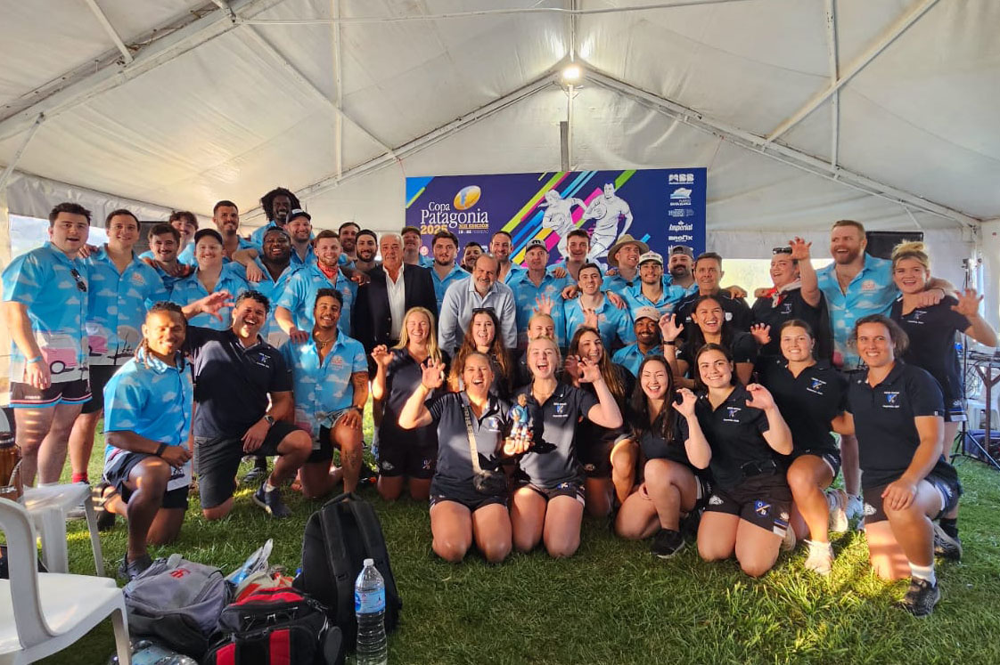🎉 Impacto Social y Cultural 🎉
Más allá de la competencia deportiva, la Copa Patagonia fomenta el intercambio cultural y la creación de vínculos entre los participantes. Este evento ha generado lazos duraderos entre jóvenes bahienses y deportistas de otros países, promoviendo valores como la tolerancia, el respeto y el entendimiento mutuo.
📅 Próximas Ediciones 📅
Aunque la edición 2025 ya concluyó, el Club El Nacional continúa trabajando en futuras ediciones del torneo. Para más información, se puede consultar el sitio web oficial del club o sus redes sociales
📸 Imágenes que nos dejaron esta grandiosa copa 📸
 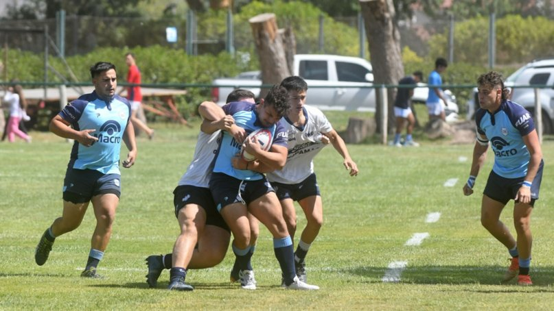
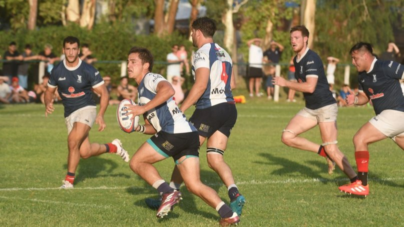
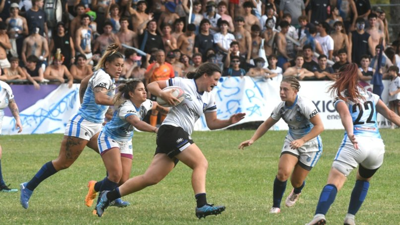
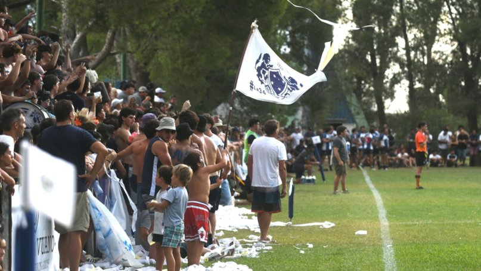
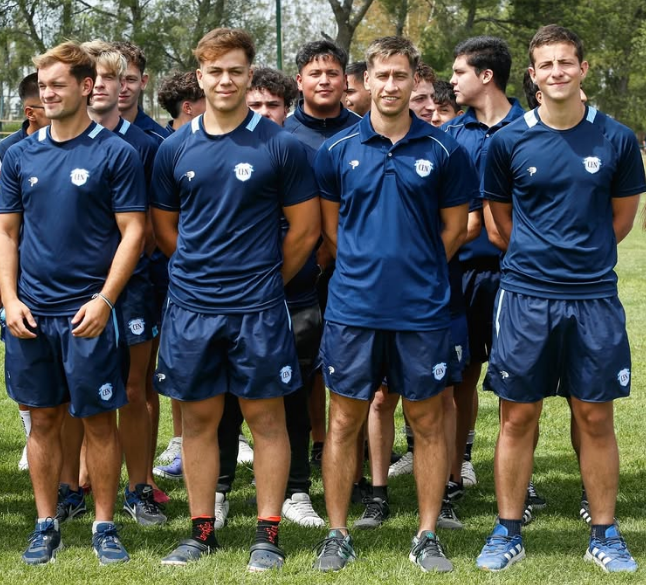
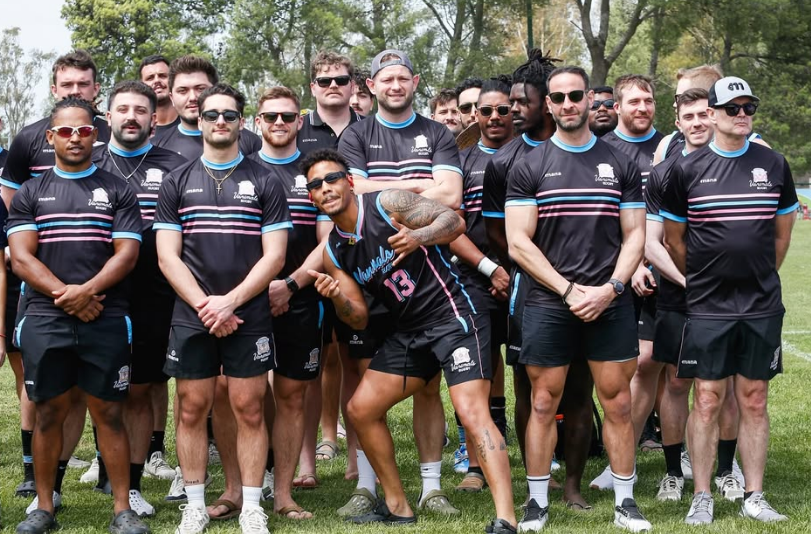
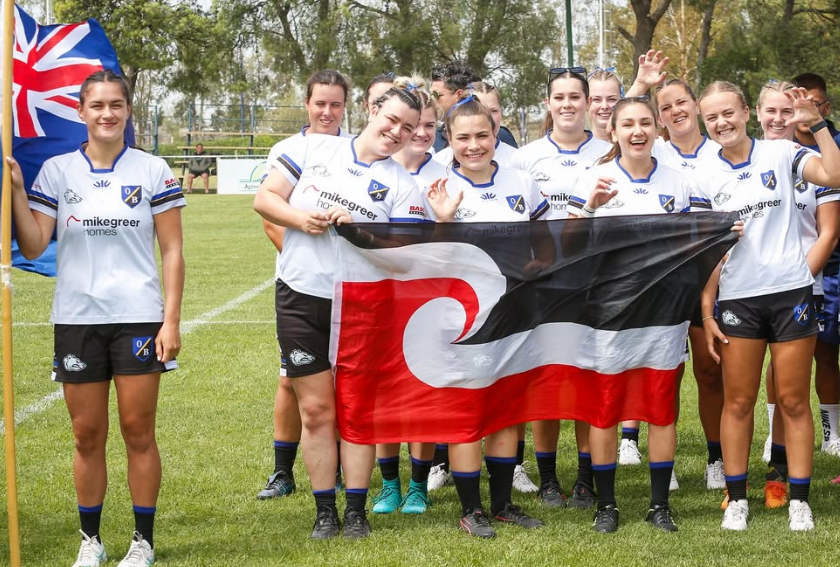
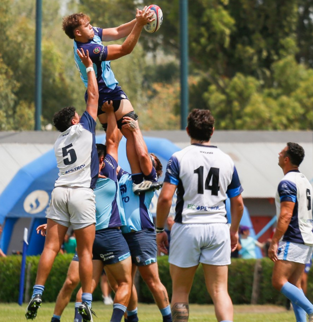
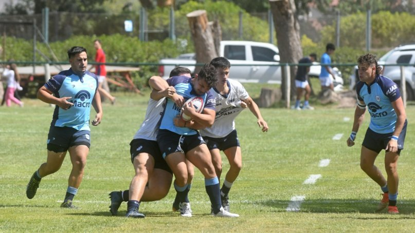
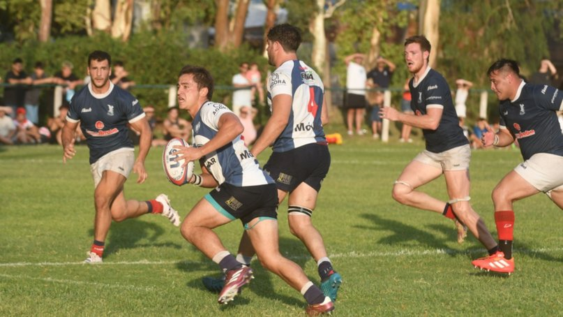
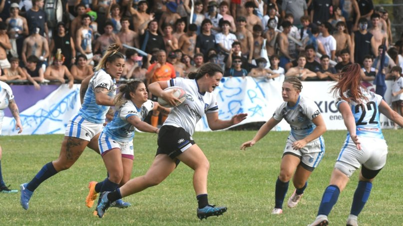
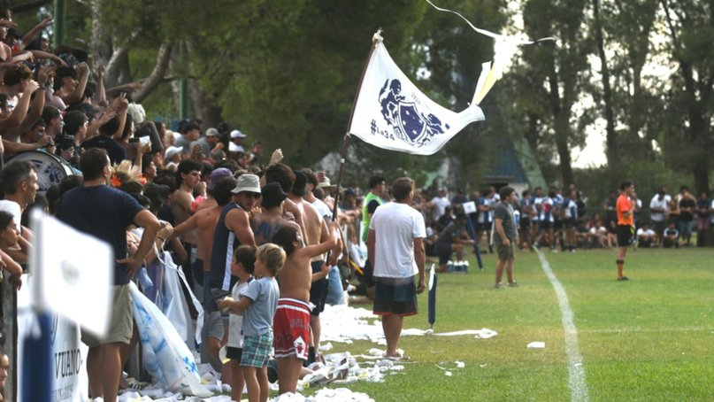
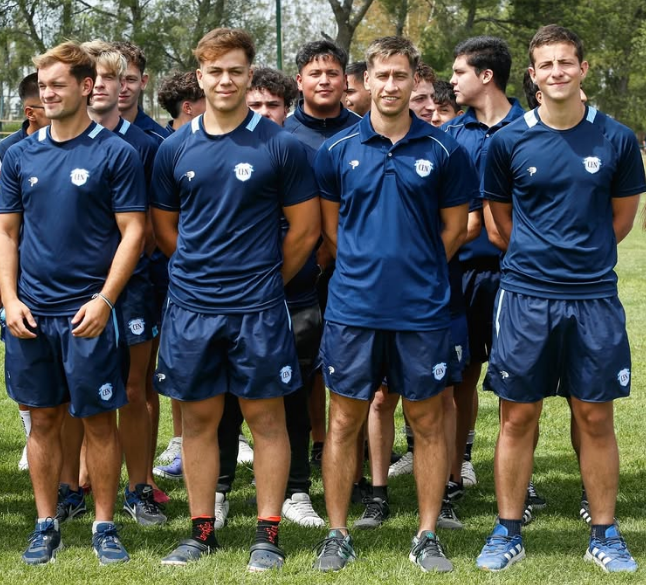
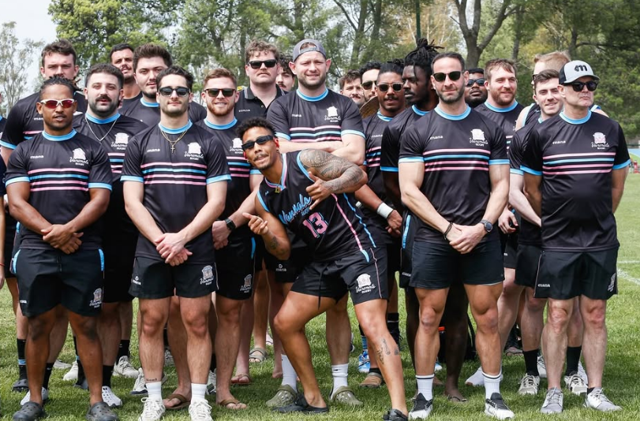
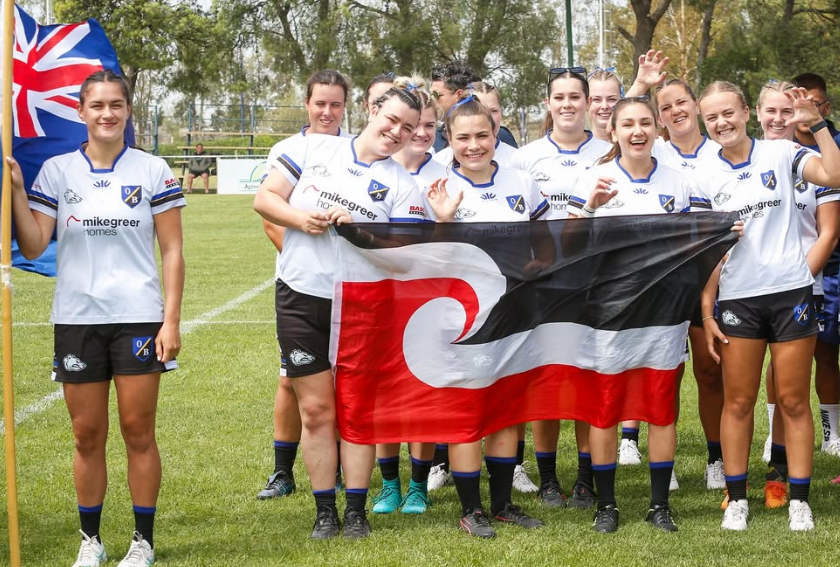
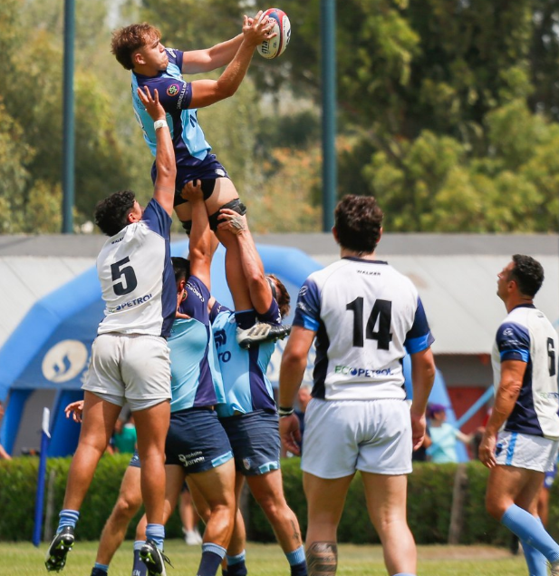

🎥 Vídeos de la copa 🎥

Día 1

Día 2 pt.1

Día 2 pt.2

Día 3
📖 Un club con historia 📖
Un club con tantos años y tantos hitos como el "CLUB EL NACIONAL" tiene mucho para contar, ha triunfado, ha perdido, ha pasado por muchas cosas. Pero siempre sabe como salir adelante, gracias a la gente que siempre esta ahi para que todo sea posible (Socios, Jugadores, Ex-Jugadores, Familias).
Historia y Tradición en el Rugby
El rugby ha sido el alma del Club El Nacional desde sus inicios. El club es miembro activo de la Unión de Rugby del Sur (URS) y ha participado continuamente en los torneos organizados por esta entidad, defendiendo con orgullo los colores del club. La historia del rugby en El Nacional está marcada por la pasión y el esfuerzo de sus jugadores, entrenadores y dirigentes. La organización y promoción de la Copa Patagonia, un torneo internacional que se realiza desde 1999 en las instalaciones del club, ha sido un punto de inflexión para posicionar a El Nacional en el mapa mundial del rugby amateur. Esta copa no solo atrae a equipos de Argentina, sino también a escuadras de países con gran tradición rugbística como Nueva Zelanda, Australia, Sudáfrica y Estados Unidos, permitiendo un intercambio deportivo y cultural invaluable para los jugadores locales.
El Tricampeonato del Torneo Regional Pampeano B
Uno de los mayores logros deportivos de El Nacional fue su tricampeonato consecutivo en el Torneo Regional Pampeano B, que conquistó en los años 2015, 2016 y 2017. Estos títulos demostraron la consolidación del club como una potencia regional, capaz de enfrentar y superar a clubes históricos de Bahía Blanca y alrededores. Durante estas temporadas, El Nacional mostró un juego sólido, estratégico y muy competitivo, lo que le permitió alzarse con las finales enfrentando a rivales directos como Club Universitario y Club Argentino de Bahía Blanca. La continuidad y la calidad de su plantel, junto con el trabajo constante en las formativas, fueron claves para lograr este éxito sostenido. Este período dorado del club no solo potenció su prestigio deportivo, sino que también motivó a nuevas generaciones de jugadores a sumarse y crecer dentro de la institución.
Infraestructura y Vida Social en EL NACIONAL
El Nacional cuenta con una infraestructura deportiva de primer nivel que incluye varias canchas de rugby, una cancha de hockey, canchas de tenis y un gimnasio cubierto equipado para el entrenamiento físico de sus socios y atletas. Estas instalaciones permiten que el club sea un lugar multidisciplinario donde conviven deportistas de diferentes disciplinas y edades. Además, el club organiza y recibe eventos deportivos, sociales y culturales que fortalecen el sentido de pertenencia entre sus socios. La vida social en El Nacional es muy activa, con espacios especialmente diseñados para reuniones, celebraciones y actividades comunitarias, haciendo que la institución no solo sea un centro deportivo sino también un punto de encuentro para familias y amigos. El Club El Nacional se caracteriza por su visión de futuro y su compromiso constante con el crecimiento y la mejora continua. La incorporación de jugadores provenientes de otras instituciones y el constante trabajo en las divisiones inferiores garantizan un plantel competitivo y una base sólida para las próximas temporadas. El club también apuesta a la profesionalización de sus entrenamientos, la modernización de sus instalaciones y la ampliación de sus actividades para atraer a más socios y jugadores. Su participación activa en el Torneo Regional Pampeano y en la organización de eventos internacionales como la Copa Patagonia refleja la ambición y el profesionalismo con los que se maneja la institución, posicionándola como un referente en la región.